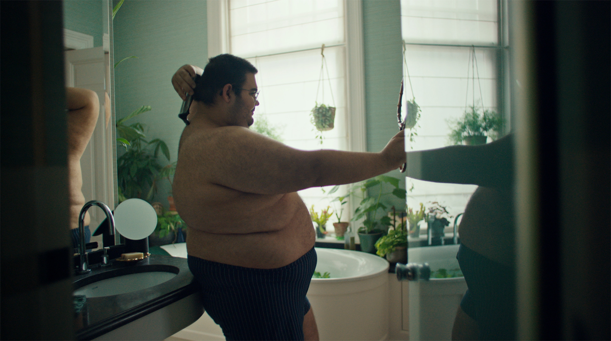

Philips Multigroomer —
All in One for All You Need

Challenge
The Philips All-in-One Groomer 7000 series had a straightforward problem: men who tried it loved it, but not enough men knew it existed. Breaking through in a crowded grooming category is hard enough. Doing it when the category speaks almost exclusively in the same visual language — clean-shaven, square-jawed, conspicuously successful — makes it harder still.
Approach
Rather than simply demonstrating product versatility, the campaign set out to shift something in the category itself. Because the real issue wasn't just noise — it was honesty. Research shows the majority of men are ashamed of their body hair, yet the entire category had been selling grooming as aspirational performance. The campaign pushed back on that. No corporate dudes with suspiciously perfect stubble. Real men, real hair, real grooming needs: chests, legs, ears, arms, backs. The full picture.

.gif)
Outcome
The campaign sparked exactly the conversation it was designed to start. It was recognised with a Gold Lovie Award for Diversity, Equity & Inclusion in Social Content, and won an Anthem Award in the same category for Branded Content. More than the awards: it pushed the Philips brand into bolder, more inclusive territory — and made a dent in a category that had been telling the same story about men for far too long.